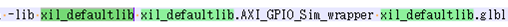

การจำลองด้วย Modelsim
1. การจำลองด้วย Modelsim
โดย ปกติแล้ว Vivado จะใช้ xsim เป็นเครื่องมือจำลองเริ่มต้น แต่ก็มีวิธีการจำลองด้วย Modelsim เช่นกัน ขั้นตอนการจำลองด้วย Modelsim มีดังนี้
1． คอมไพล์ไลบรารีของ Xilinx ด้วย Modelsim
2． สร้างสคริปต์การจำลองบน Vivado
3． เปิด Modelsim และทำการจำลอง
4． แก้ไข/สร้าง test_bench โดยอิงจากข้อ ③ แล้วทำการจำลอง
※ เนื่องจาก AXI Verification IP จำเป็นต้องใช้ license เมื่อทำการจำลองด้วย Modelsim จะเกิด error （หาก ไม่มี license Modelsim แบบเสียเงิน จะไม่สามารถจำลอง AXI Verification IP ได้）
1.1. การคอมไพล์ไลบรารีของ Xilinx ด้วย Vivado
เปิด Vivado แล้วคลิกที่ Tool → Compile Simulation Libraries
ระบุ ตำแหน่งของ Compiled library location และ Simulator executable path แล้วคลิก 「Compile」

เมื่อคอมไพล์เสร็จสิ้น ไฟล์ modelsim.ini จะถูกสร้างขึ้นด้วย (เป็นสคริปต์เริ่มต้นสำหรับโหลดไลบรารี Xilinx เมื่อเปิด Modelsim)
※ 1. การคอมไพล์ IP ทั้งหมดของ Xilinx ใช้เวลานาน (ประมาณ 1 ชั่วโมง)
※ 2. จากการทดลองด้วย modelsim 10.5b(Quartus 17.1) และ Vivado 2022.1 พบว่ามีโมดูลที่คอมไพล์ไม่ผ่าน 4 ตัว หากการออกแบบใน Vivado ไม่ได้ใช้โมดูลเหล่านั้น ก็ไม่น่าจะมีปัญหา

※ 3. หน้าจอในกรณีที่ระบุ Path ของ GCC
※
4. ถ้าไม่มี license AXI BFM จะมี error ประมาณนี้

1.2. การจำลองด้วย Modelsim (สำหรับดีไซน์ที่ไม่มี Xilinx VIP)
1． การส่งออกการจำลองบน Vivado
สร้าง ฟิลเตอร์ชื่อ 「sim」 ในโปรเจกต์ แล้วคลิก 「Export Simulation」 ใน Vivado

2． การติดตั้งการจำลอง
ภายใต้ 「sim」
do compile.do
do simulate.do
※ เพื่อไม่ให้ modelsim ปิดตัวเองหลังจากการจำลองเสร็จสิ้น ให้ใส่คอมเมนต์หน้าคำสั่ง quit -force

※ หากเป็นดีไซน์ที่มี Xilinx VIP จะเกิดข้อผิดพลาดดังภาพด้านล่างและไม่สามารถทำการจำลองได้

1.3. การรันการจำลองด้วย UVVM + Modelsim

xil_defaultlib uvvm_util.tb_axs_iomap xil_defaultlib.glbl
cd d:/xilinx/modelsim/AXI_Basics_3/UVVM_Light-master/sim/
do ./compile_and_run_demo_tb.do
do ./sim.do

1.4. วิธีการจำลองดีไซน์ที่มี Zynq ด้วย UVVM + Modelsim
1． Download ซอร์สโค้ด UVVM
คัด ลอกไฟล์ modelsim.ini (สำหรับโหลดไลบรารี Xilinx) ไปยัง UVVM_Light-master\nsim
2． export simulation บน Vivado
สร้าง ฟิลเตอร์ชื่อ 「sim」 ในโปรเจกต์ แล้วคลิก 「Export Simulation」 ใน Vivado

3． แก้ไขซอร์สโค้ด
- Pynq-Z2\sim\compile.do
Ø เพิ่ม vlib modelsim_lib
Ø ลบส่วนของ include vip
Ø ลบส่วนคอมไพล์ของ base_ps7_0_0 (จะใช้เวอร์ชันที่สร้างเอง (พร้อม UVVM) แทน)
Ø แก้ไข tb_prj_top.v และ glbl.v ดังนี้
"../../UVVM_Light-master/tb/tb_prj_top.v"
"../../sim/modelsim/glbl.v"
ใน กรณีของการจำลองด้วย Vivado (Xsim) ไฟล์ tb_prj_top.v จะใช้ Xilinx VIP เพื่อควบคุมบัส AXI แต่ในครั้งนี้เราจะใช้ UVVM ในการควบคุม ดังนั้นให้คอมเมนต์ส่วนของ Xilinx VIP ทั้งหมดออก
- Pynq-Z2\UVVM_Light-master\sim\ compile_and_run_demo_tb.do
เพิ่มเนื้อหาต่อไปนี้
do ../../sim/modelsim/compile.do
vlib uvvm_util
eval vcom $compdirectives -work xil_defaultlib ../tb/base_ps7_0_0.vhd
※ ในไฟล์ base_ps7_0_0.vhd เองนั้น จะมีลอจิกสำหรับควบคุมของ UVVM อยู่
※ วางไฟล์ base_ps7_0_0.vhd และ tb_prj_top.v ไว้ที่ Pynq-Z2\UVVM_Light-master\tb\
- สร้างไฟล์ sim.do ใน Pynq-Z2\UVVM_Light-master\sim
คัด ลอกคำสั่ง vsim ที่เขียนไว้ใน Pynq-Z2\sim\simulate.do จากนั้นลบ library ที่มี vip ออก แล้วบันทึกไปยัง Pynq-Z2\UVVM_Light-master\sim\sim.do
※ หากใส่ vip library เข้าไปด้วย
จะ error เนื่องจากเราไม่มี license

4． การจำลองด้วย Modelsim
เปิด Modelsim
cd d:/xilinx/modelsim/Pynq-Z2/UVVM_Light-master/sim/
do ./compile_and_run_demo_tb.do
do ./sim.do